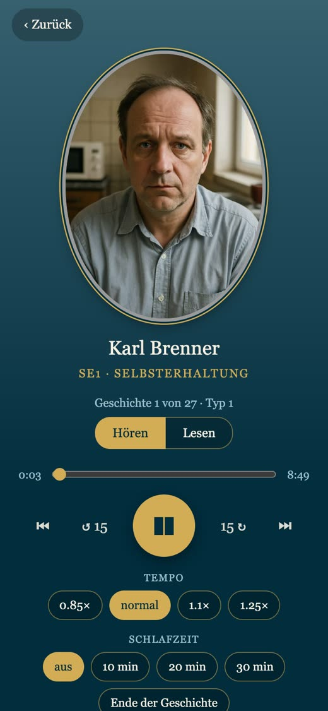

Das App-Hörbuch zum Buch

In der Tiefe der Zeit
27 Geschichten über Verlust, Geheimnisse und die verborgene Kraft des Lebens.
Siebenundzwanzig Menschen, neun Typen, drei Instinkte: Jede Geschichte dauert rund zehn Minuten und lässt sich hören oder mitlesen, mit der Stimme des Autors (digital vertont, mit Zustimmung des Autors). Mit Tempo-Wahl und Schlafzeit, auf dem Handy.
In VorbereitungZum Buch
Das App-Hörbuch erscheint in Kürze. Preis und Kauf-Link folgen an dieser Stelle.
Der Film zur App
90 Sekunden: siebenundzwanzig Menschen, siebenundzwanzig Geschichten.
Musik: „The Silence Between Our Words“ von Detlef Rathmer.
Ein Blick in die App
So sieht das App-Hörbuch auf dem Handy aus.



Was das App-Hörbuch bietet
Jeder der neun Enneagramm-Typen in drei Instinkt-Varianten, jede Variante ein eigener Mensch mit eigener Geschichte, zu jeder ein Porträt.
Rund zehn Minuten pro Geschichte, gesprochen mit der Stimme des Autors (digital vertont, mit Zustimmung des Autors). Tempo von 0,85 bis 1,25, Sprünge um 15 Sekunden.
Zu jeder Geschichte der vollständige Text. Beim Hören läuft er mit, Sie können jederzeit zwischen Hören und Lesen wechseln.
Eine Geschichte zum Einschlafen: Die Schlafzeit stoppt nach 10, 20 oder 30 Minuten oder am Ende der Geschichte.
Keine schnellen Antworten, sondern Fragen, Resonanz und die stille Gewissheit, dass das Leben trägt, auch in der Tiefe.
Das Buch zur App

Der Autor
 Detlef Rathmer
Detlef RathmerSachbuchautor, Enneagramm-Experte, Dozent und Coach. Seit dem Jahr 2000 als Heilpraktiker tätig, mit dem Schwerpunkt klassische Homöopathie.
Hinweis: Die Geschichten sind literarische Erzählungen, inspiriert von den Grundmustern des Enneagramms. Sie sind keine Diagnose, keine Therapie und ersetzen keine ärztliche oder psychotherapeutische Hilfe.